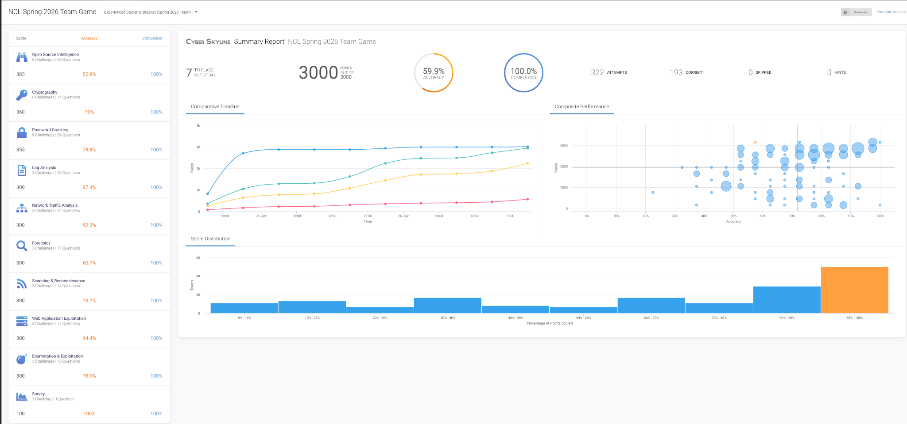
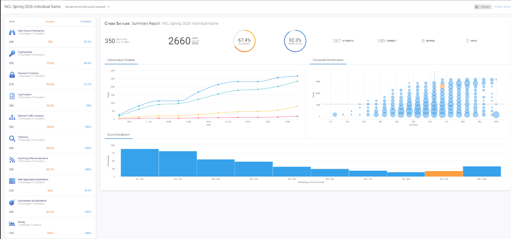
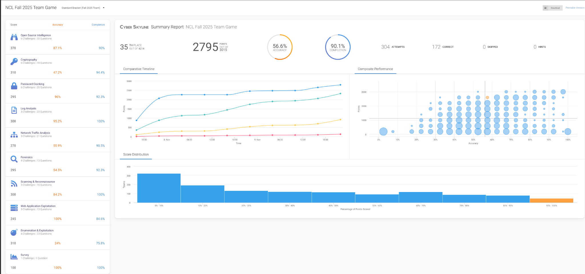
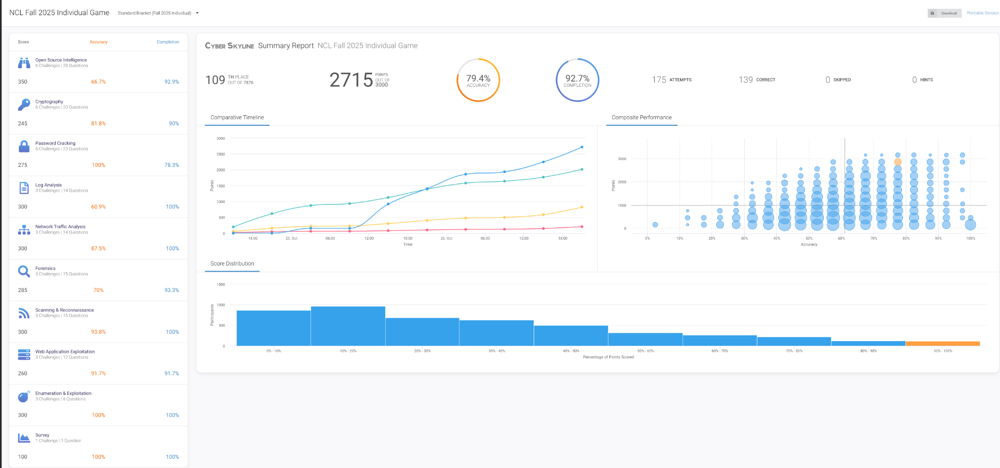
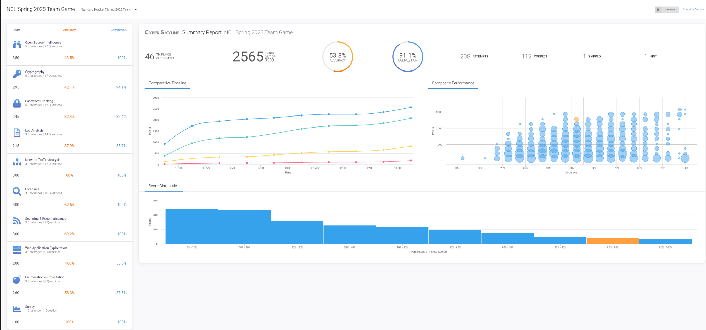
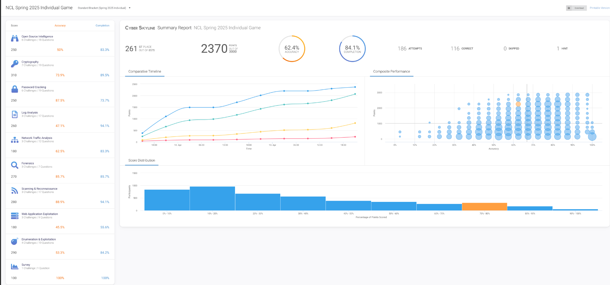
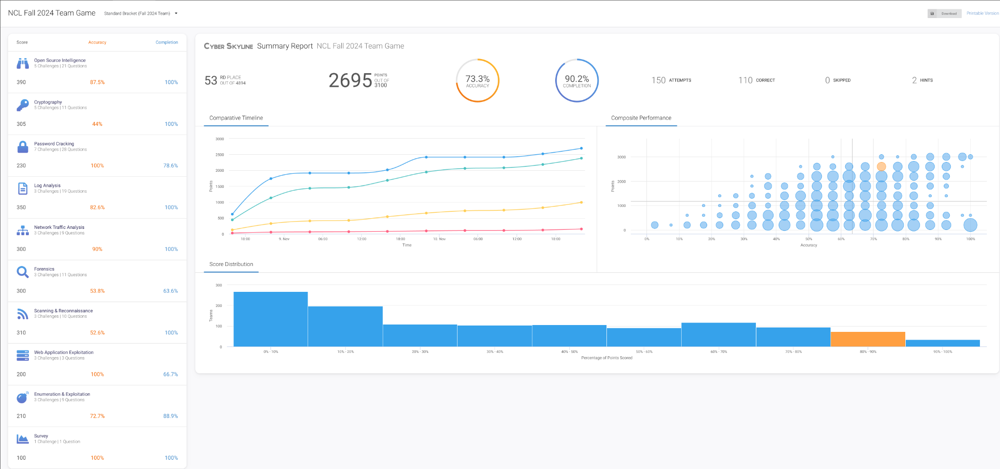
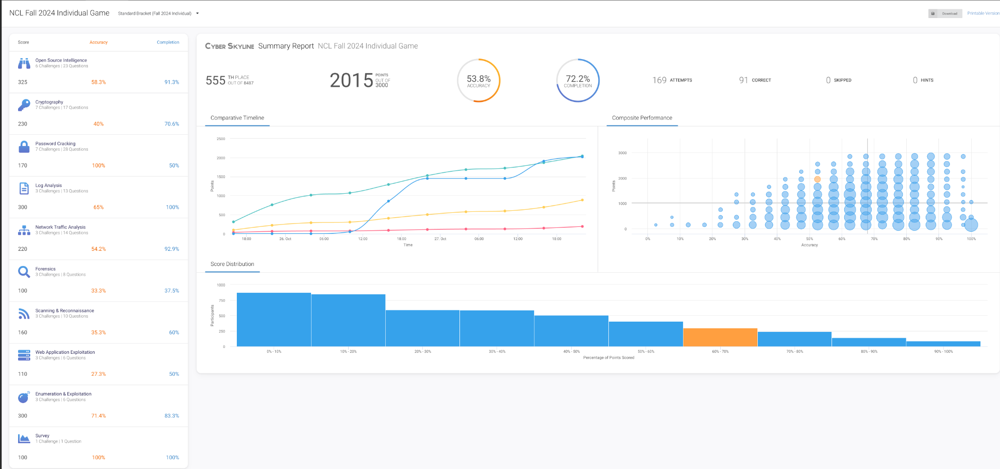

CTF Proof
NCL / Cyber Skyline Result Reports
This is the kind of evidence that belongs behind the Operator Vault: scoreboard proof, category-level performance, completion rates, accuracy, attempts, and historical improvement across seasons.
Experienced Students Bracket
full point completion
out of 7,876
out of 4,214
Evidence gallery
Each card opens the full screenshot. Keep these public-safe. Do not include live flags, private team notes, platform-only content that violates event rules, or anything you would not want a recruiter to zoom in on.

NCL Spring 2026 Team Game 7th out of 341 · 3000/3000 · 100% completion
NCL Spring 2026 Individual Game 350th out of 7,011 · 2660/3000 · 92.3% completion
NCL Fall 2025 Team Game 35th out of 4,214 · 2795/3015 · 90.1% completion
NCL Fall 2025 Individual Game 109th out of 7,876 · 2715/3000 · 92.7% completion
NCL Spring 2025 Team Game 46th out of 4,779 · 2565/3000 · 91.1% completion
NCL Spring 2025 Individual Game 261st out of 8,575 · 2370/3000 · 84.1% completion
NCL Fall 2024 Team Game 53rd out of 4,894 · 2695/3100 · 90.2% completion
NCL Fall 2024 Individual Game 555th out of 8,487 · 2015/3000 · 72.2% completionHow to present this
The strongest angle is not “I played CTFs.” It is “I repeatedly performed across OSINT, cryptography, password cracking, log analysis, network traffic analysis, forensics, scanning, web exploitation, and enumeration under timed conditions.” That sounds like analyst work because it is analyst behavior.
Next evidence to add
- One polished after-action writeup for your best season.
- One redacted challenge walkthrough showing commands, reasoning, and dead ends.
- One “skills mapped to job duties” section connecting NCL categories to SOC, CTI, vulnerability validation, and incident response.
Public-safety rule
This page is public if hosted on GitHub Pages. Use screenshots, redacted notes, and training-safe material only.